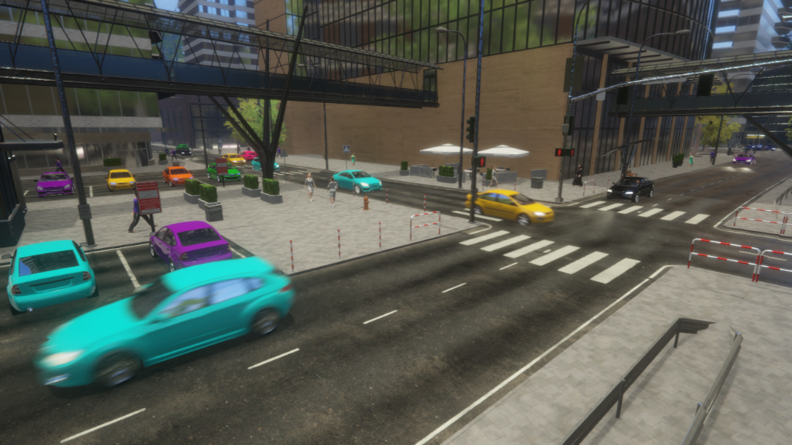

|
Paradise City
v1.0
|
|
Paradise City
v1.0
|
Paradise City is a real-time simulation which presents behaviors occur in big city. In the project many actions are performing independently of each other. The main goal is created the full of life environment with a lot of characters and vehicles. Specific people have their own sequences of the behaviors which is executed in proper order.
The created project is a kind of benchmark. The user can use the existing settings to test their own computer hardware. This allows to rate the advantages and disadvantages of individual components. Additionally, the developer can get to know the test environment used better. The obtained knowledge will enable the creation of more efficient programs using Unity in the future.
The list below presents most important properties:





The list of used solutions:
The author of the project have using some arts shared by CC0 or CC BY license. Without this support, the game would not be possible. A complete list of the used materials and their creators can be found in the credits text file. Moreover, many free resources from the unity asset store were included. Information can also be obtained by selecting the appropriate tab from the game menu.